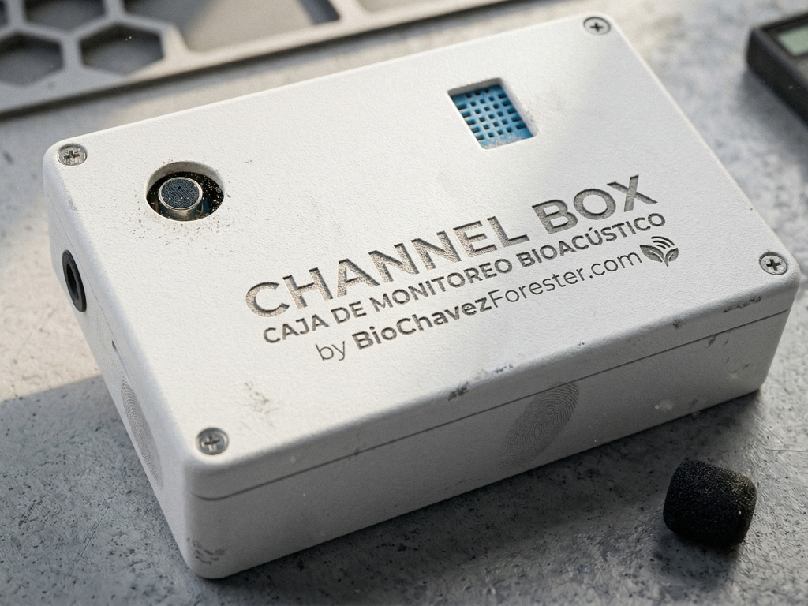

CHANNEL BOX
Caja de Monitoreo Bioacústico
Desarrollada por el Biólogo Erick Elio Chavez Gurrola para ofrecer una alternativa nacional, robusta y accesible al monitoreo acústico de aves.
🦜 Especialización en Aves
Diseñada específicamente para el rango audible. CHANNEL BOX se optimiza para capturar paisajes sonoros enfocados en la ornitología, garantizando grabaciones de alta fidelidad.
🌡️ Sensor de Humedad y Temperatura
No solo graba sonido. Cada registro se correlaciona con datos ambientales críticos (Humedad y Temperatura), permitiendo análisis ecológicos mucho más profundos.
🌧️ Diseño Todo Terreno
Entregada con su propia carcasa industrial impermeable. Lista para ser instalada en el campo bajo condiciones de lluvia o humedad extrema, protegiendo los componentes electrónicos.
💻 Ecosistema Propio
Incluye su propio software de programación intuitivo para configurar intervalos de grabación y gestión de energía antes de salir a campo.
🔌 Autonomía de Larga Duración
Diseñada para misiones extendidas. Funciona con baterías estándar que permiten semanas de grabación continua, reduciendo las visitas al sitio de estudio.
💾 Almacenamiento Masivo
Soporte para tarjetas MicroSD de alta velocidad. Gestiona miles de horas de audio en formato comprimido o WAV sin pérdida de datos.